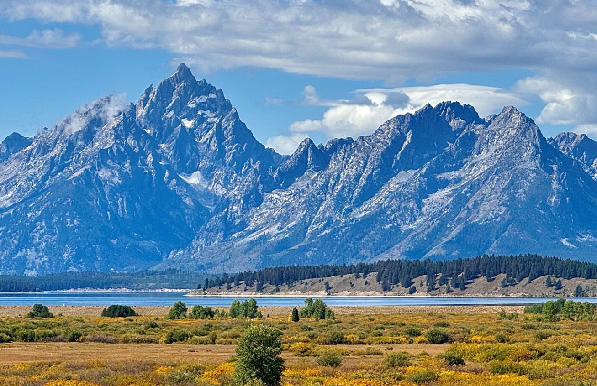

This picture was taken in September 2024 on my first trip to Grand Teton and Yellowstone National Parks. During the trip, the following activities occured:
For more information, visit Grand Teton National Park .